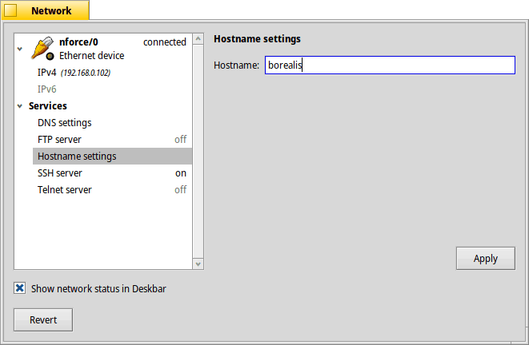

Изучаем FTP в HaikuOS
Момент о безопасности \ логин пароль
По умолчанию в HaikuOS пользователь назван user, а пароль нигде не используется (и возможно не установлен?), поэтому перед выполнением действий внутри сети, нам нужно его изменить для безопасности и удобства, следующей командой (при вводе пароля, никаких обозначений не показывается)
passwd
После этого нам необходимо включить сам FTP сервер, самый простой вариант уже присутвующий в системе, можно включить через настройки сети, но он не поддерживает шифрование, потому имейте ввиду, что работать с таким сервером вне локальной сети не безопасно.
Включение Встроенного FTP
Открываем меню DeskBar, находим раздел Preferences, в нем открываем приложение для настройки сети Network

В разделе Hostname settings мы можем установить имя компьютера в сети, по умолчанию оно shreder. Так же под названием интерфейсов сетевых подключений, в скобках, мы можем увидеть локальные IP адреса нашей HaikuBox, в нашем примере это 192.168.0.102 .
Подключение к FTP, загрузка\выгрузка файлов.

Рекомендация \ нюанс при передаче файлов.
Есть два типа передачи данных по протоколу FTP - это ASCII, подходящий для текста и Binary, рекомендуемый для текста и прочих файлов. Разница кратко говоря лишь в том, что при Binary режиме клиентом не воспринимаются случайные управляющие символы, которые могут помешать при передачи файла. Давайте посмотрим на примере. Настройка Transfer, Transfer type установлена в режиме AUTO (но опытным путем выяснено, что выбирается ASCII), так вот попробуем загрузить себе изображение kitsune jpg и проверим, что у нас получилось.


cd Pictures/
sha1sum kitsune.jpg
Получим следующую хэш сумму 3c7661e88ce86f8773ee6820fcb080583b7674d8 kitsune.jpg После чего переключим режим передачи в Binary, после чего повторим попытку создав и сверив хэшсуммы на сервере и клиенте, а также размер. Размер Соответсвует - 251,529 Байт, а хэш суммы на сервере и клиенте совпадают и равны 0864af78d5d8a805f9b6d3e0b92bd44214f3e08f kitsune.jpg. Зрительно результат тоже стал лучше.
Последнее обновление 26.02.2023